Characters & Combat System
1. The Art of Abilities
In the world of Atramentia, magic is not recited; it is drawn with patience and precision in your pocket diary:
- Basic & Charged Attack: Usage of a pre-drawn spell in your notebook. No cooldown. Charged attacks require holding the stroke for greater duration or power.
- Quick Spell: Activated with cooldowns. They require drawing the magical pattern at high speed; the quality and accuracy of the stroke define the damage dealt.
- Personal Spell: The ultimate and complex technique of each character. Unleashes devastating power under unique combat conditions.
- Combat Passive: Ink spirits that actively assist (summons) or imbue mystical enhancements (buffs) permanently or after combos.
- Exploration Passive: Daily talents that improve camp life, such as cooking, plant gathering, and cartography.
2. Character Types
The artist's personality defines their stroke style, the weapon they wield, and their role on the battlefield. Expand each affinity to read their notes:
 Destruction - Hyperactive, restless, and passionate.
Destruction - Hyperactive, restless, and passionate.
Role: Fast burst and constant DPS sorcerer.
Due to their impulsive nature, they are the fastest mages at putting spells on paper. However, by drawing in excessive haste, the geometric fidelity of their strokes decreases, making their base damage per individual spell more moderate.
- Stroke Speed: High (95%)
- Geometric Precision: Low (42%)
- Impact Power: Medium (58%)
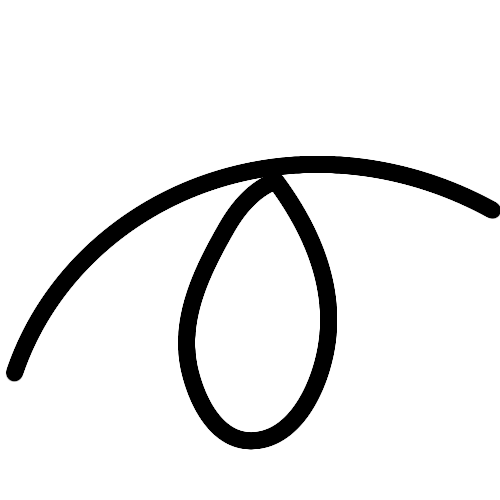
Concentration - Perfectionist, patient, and highly detail-oriented.
Role: Devastating critical hit caster.
They seek absolute geometric perfection in every rune. They take their time to draw immaculate lines, prolonging their casting and reload times. In exchange, their spells possess flawless magical purity that unleashes colossal impact.
- Stroke Speed: Low (30%)
- Geometric Precision: Perfect (98%)
- Impact Power: Devastating (95%)
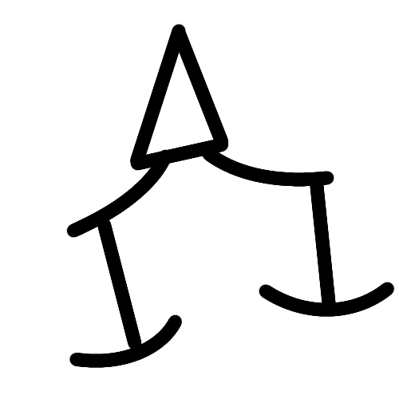
Balance - Pragmatic, adaptive, and centered.
Role: Versatile and balanced mage.
They do not obsess over absolute perfection, but rather a functional and efficient result. They find the perfect middle ground: their spells retain very respectable damage while enjoying highly fluid execution and reload speed.
- Stroke Speed: Good (75%)
- Geometric Precision: Good (70%)
- Impact Power: Good (72%)
Support - Altruistic, caring, and protective of the group.
Role: Healer, damage mitigator, and elemental buffer.
Although their direct offensive capability with ink is reduced, they channel their artistic gifts into restoring their companions' vitality, cleansing status effects, and optimizing allied magic circles to maximize group power.
- Stroke Speed: Medium (65%)
- Geometric Precision: Medium (60%)
- Impact Power: Low (35%)
3. Elemental Essences
Ink imbues the paper with natural properties. Elements manifest according to the flow of mystical energy used:
 Fire
Fire
 Wind
Wind
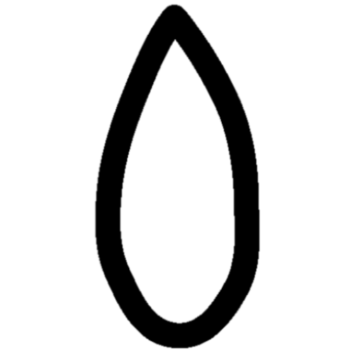
Water Earth Light
Light
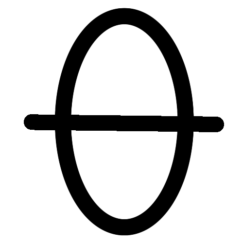
Darkness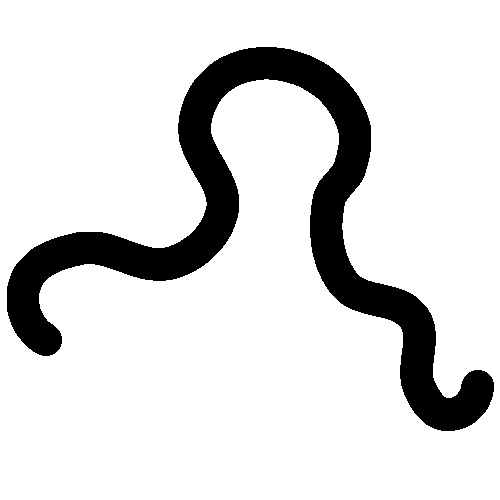
AetherGeometry of Magic Circles
The placement of the ink alters the final result of the spell:
- In the Center: Defines the primordial element and core of the spell.
- On the Margins: Acts as a secondary catalyst or reaction trigger.
- Overlapping Circles: By intertwining multiple elements and modifiers, a complex spell is born.
4. Glyph Compendium
Glyphs give direction, purpose, and form to the elemental energy of the central circle.
Basic Function Glyphs
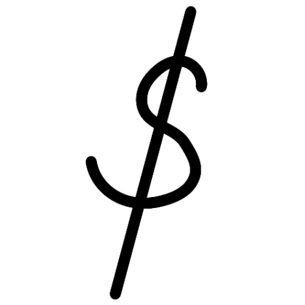
Levitation Glyph
Allows objects to be suspended. A rare non-elemental case; it is drawn directly in the heart of the circle.
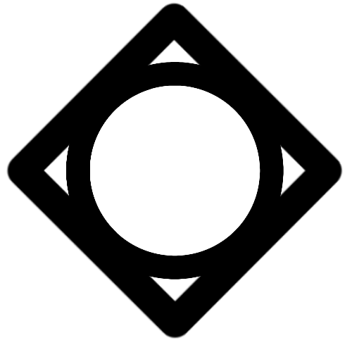
Destruction Glyph
Applied to structures or terrain, ideal for imbuing projectiles with explosive properties.
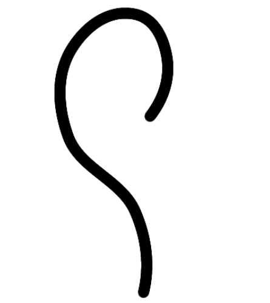
Healing Glyph
Closes wounds and purges harmful status effects. Placed on the edges alongside the attuned element.
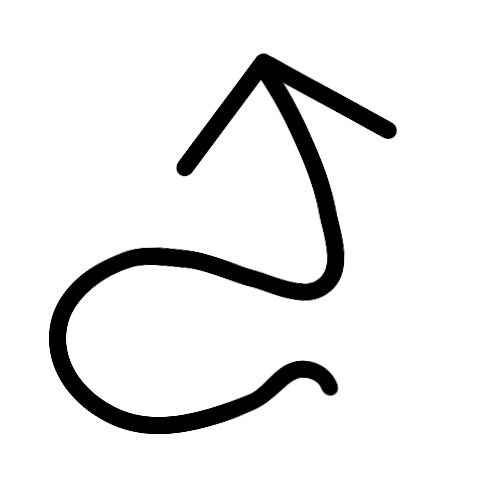
Buff Glyph (Enhancement)
Elevates physical attributes or refines the elemental purity of an ally. A secondary satellite.
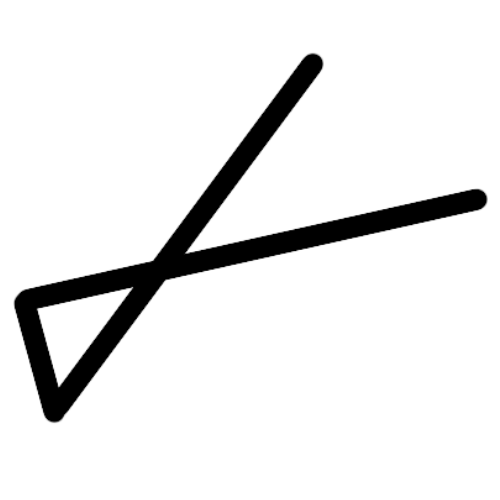
Damage Glyph
A purely offensive enhancer in charge of accelerating and sharpening magical projectiles.
Complex Function Glyphs
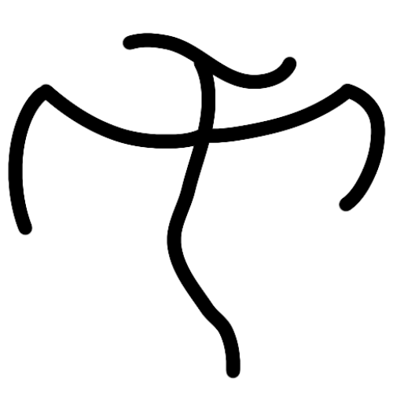
Summoning Glyph
The complex core of ink rituals. Summons autonomous entities and constructs into combat.
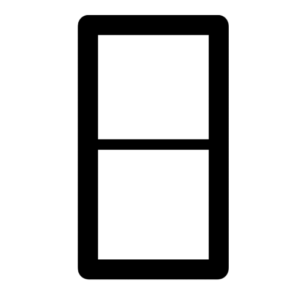
Creation Glyph
Materializes bulwarks, permanent protective shields, or even architectural structures.
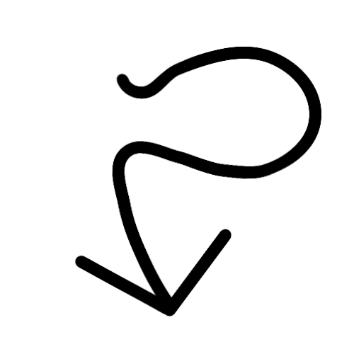
Debuff Glyph (Detriment)
Mitigates the momentum or breaks the mystical efficiency of adversarial targets by weakening them.
5. Characters
Select a member to view their file:
 Mitis
Mitis